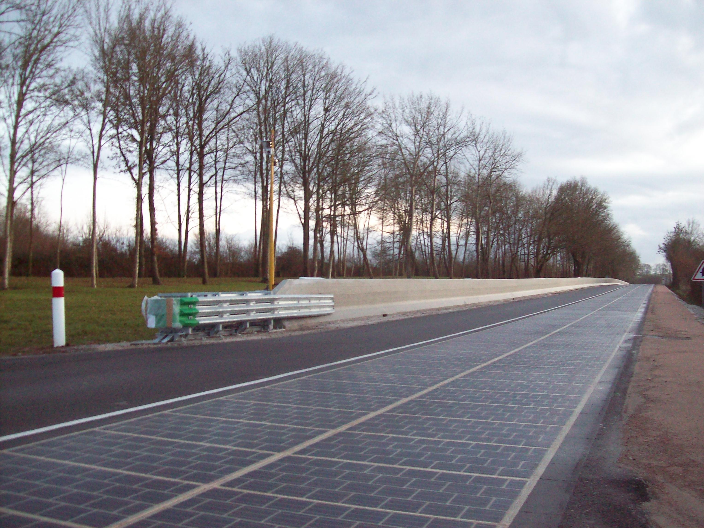
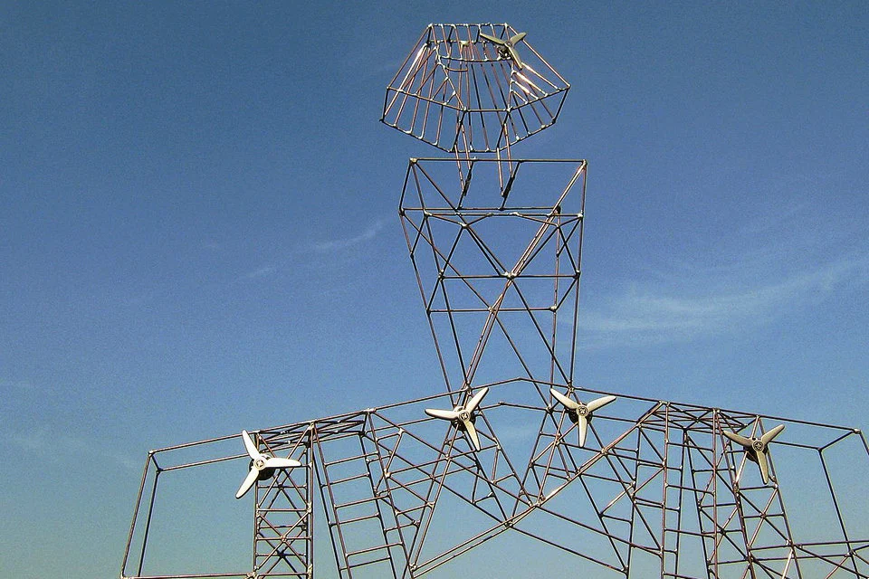
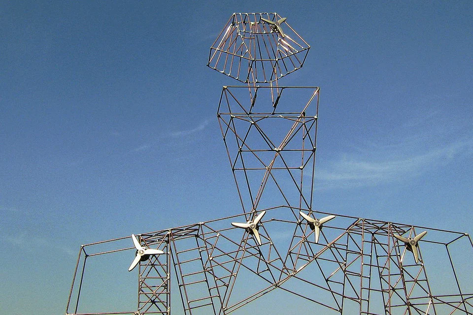

Vivre avec son Environement
Art et Environnement

L’art est fondamentalement une relation entre l’énergie de l’artiste et les énergies qui l’environnent, naturelles, humaines, technologiques.
Lionel Richard explore ces dynamiques dans les courants artistiques du XXe siècle, du Futurisme aux artistes contemporains.
Art et énergies
Sans référence à l’énergie, la notion même d’art, c’est-à-dire de création, est-elle envisageable ?
Significatif est le fait que le mythe grec de Prométhée dérobant le feu au Ciel soit devenu le symbole du développement de l’humanité. Toute l’évolution de notre planète est marquée par la confrontation de ses habitants avec la nature.
C’est l’énergie des hommes, physique et spirituelle, qui est à l’origine de leur survie devant la toute-puissance des éléments naturels.
Peu à peu, ils ont appris à maîtriser les forces issues de l’air, de l’eau, de la terre, du soleil.
Les inventions et découvertes, du moulin à vent à la machine à vapeur, du moteur électrique aux centrales nucléaires et aux éoliennes, ont permis de concevoir les machines les plus sophistiquées.
Vivant avec leur temps, les artistes ne pouvaient demeurer insensibles aux sources d’énergie qui les entouraient.
Comment ne les auraient-ils pas représentées ? Comment n’auraient-ils pas été tentés d’impliquer leur pouvoir de création en jouant avec elles ?
L’histoire universelle de l’art témoigne de leur relation dynamique avec les formes d’énergie qui dominaient à leur époque, voire avec celles qu’ils imaginaient dans le futur.
Tel est ce qu’entend montrer ce livre, en s’appuyant principalement sur les courants artistiques du XXe siècle.
Depuis le Futurisme italien avant 1914 et le cinétisme après 1945, en passant par la fresque dédiée par Raoul Dufy à La Fée Électricité en 1936-1937, les interrogations sur les variétés possibles d’énergies n’ont cessé de se manifester.
Qu’ils s’appellent Joseph Beuys, Pol Bury, Bruce Nauman, Janis Kounellis, Emmanuel Saulnier, ou plus récemment Olafur Eliasson, Bruno Peinado, Gianni Motti, les artistes contemporains ne sont pas restés à l’écart.
L’auteur
Lionel Richard,
Il existe plusieurs genres émergents d’art des énergies renouvelables, qui vont du photovoltaïque ou des éoliennes alimentant des lumières sculpturales à la forme des surfaces génératrices d’énergie en tant que sculpture, à l’utilisation des cellules photovoltaïques ou des éoliennes pour des effets purement décoratifs, enfin et surtout, est un art représentatif représentant diverses technologies renouvelables.
Lumières sur bâtons
L’éclairage sur un bâton semble être l’expression la plus courante des énergies renouvelables, car l’art public, car l’éclairage du site est nécessaire dans de nombreuses situations différentes…
Lumières tourbillonnantes
Près de Munich en 2009, il y a eu une collaboration entre Siemens et l’artiste Michael Pendry [consultez la séquence d’installation!] Pour éclairer les pales d’une éolienne de 30 mètres de diamètre.
Lumière interactive (alimentée par le soleil, le vent ou les personnes)
De la piste de danse au panneau d’affichage, ces «sculptures» ont peu de prétention à être «de l’art».
BIPV Art
Pour justifier le coût de la construction de systèmes photovoltaïques intégrés, ils sont souvent appelés «art».
D’une manière ou d’une autre, la plupart de ces exemples ne répondent pas au test de l’odorat «est-ce de l’art» et ne sont-ils que de la décoration?
Représentation picturale des énergies renouvelables
Les peintures aux photographies (mais pas encore de sculptures) dépeignent l’infrastructure des énergies renouvelables comme une icône – donc les moulins à vent, les panneaux solaires et les cordes de biomasse remplissent un genre qui semble se sentir bien sans vraiment faire du bien (ou être un bon art).
Je ne suis pas sûr que ce genre ait une signification pour le monde de l’art ou le mouvement de durabilité, mais nous verrons…
PV-Punk
Il y a aussi un mouvement croissant pour considérer l’impact environnemental du monde de l’art. Alors que les énergies renouvelables n’ont pas encore alimenté une galerie ou un atelier d’artiste entier – ce dialogue fait le pont entre l’esthétique / théorie et le rôle culturel de l’art pour explorer les questions existentielles – mais c’est un sujet pour une autre fois.
Le fait de réutiliser des éléments existants est une solution pertinente.
C’est même indispensable pour diminuer l’impact de la fabrication de nos biens de consommation sur l’environnement.
On puise moins dans les ressources, on empêche l’extraction de matières premières et on évite un processus de fabrication polluant.
On limite donc par la même occasion le gaspillage et on réduit sa production de déchets.
« Upcycler », réutiliser plutôt que jeter !
« L’upcycling » est la traduction en français du terme “surcyclage” ou encore “upcyclage”, signifie littéralement “recycler par le haut”.
Pour faire simple, « l’upcycling », c’est un peu le top en matière de recyclage :
créer du neuf avec du vieux, transformer des sous-produits sans pour autant transformer ou déconstruire la matière première que l’on utilise, valoriser les produits usagés en leur donnant une nouvelle vie plus qualitative sans processus de transformation, qui la plupart du temps, inclut une dépense en énergie.
lorsqu’un ou une artiste utilise un objet ou un matériau précis pour lui insuffler une seconde existence. On peut parler de « Upcycling » avec une notion de valeur ajoutée qui sera alors au cœur du processus. Un produit upcyclé, c’est donc un produit auquel on donne un nouvel usage, quelques artistes comme :
Alfredo-Longo
Timothy Noble et Susan Webster
Khalil Chishtee
Nick Gentry
ont su élever « l’upcycling » au rang d’art à part entière.
Alors que pour le « downcycling », aussi connu sous les noms de sous-cyclage revient à transformer des produits inutilisés ou post-consommation en biens de qualité ou de fonctionnalité inférieure à l’original.
Le « downcycling » redonne vie à des matériaux qui, autrement, seraient mis en décharge.
Si « l’upcycling » est généralement considéré comme la voie la plus durable, en grande partie parce qu’il prolonge la durée de vie du m atériau avant qu’il ne se dégrade.
« l’upcycling » et le « downcycling » sont des moyens éprouvés d’éliminer les déchets solides.
 
